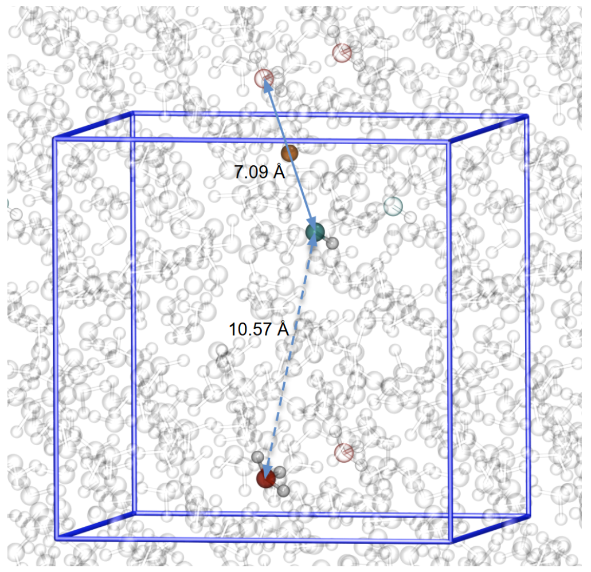
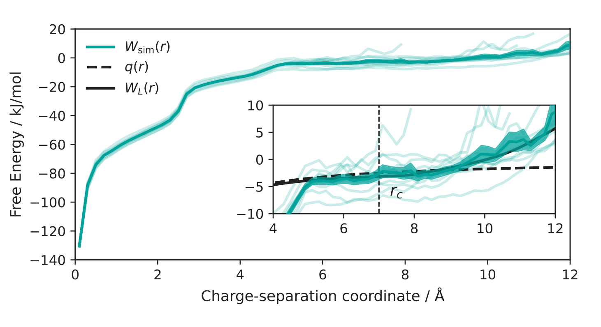
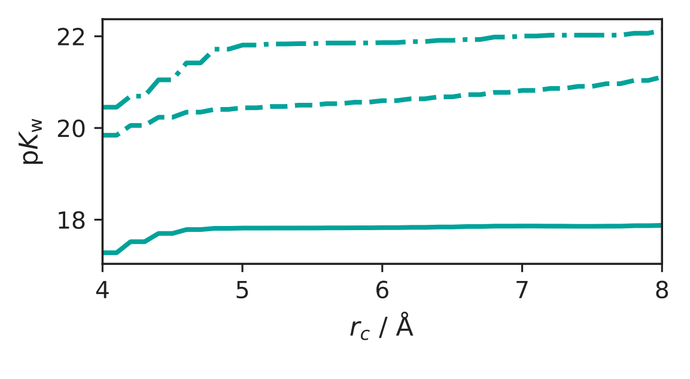
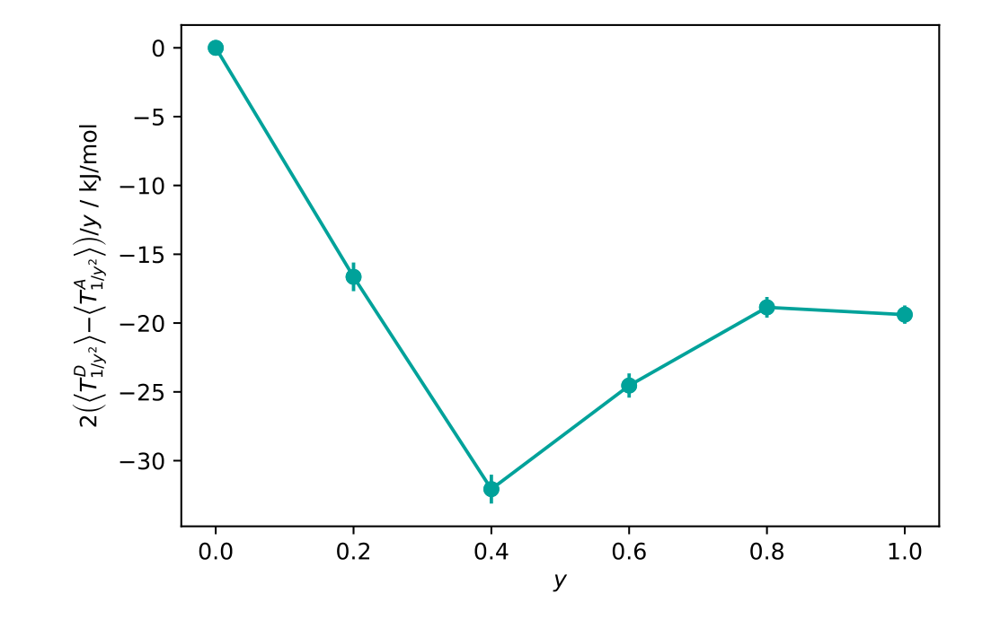
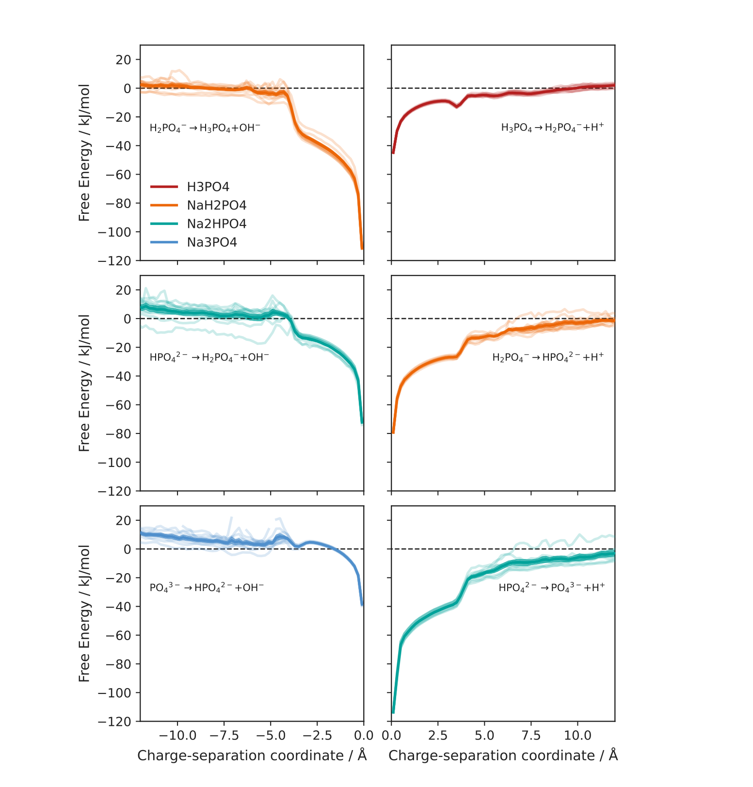
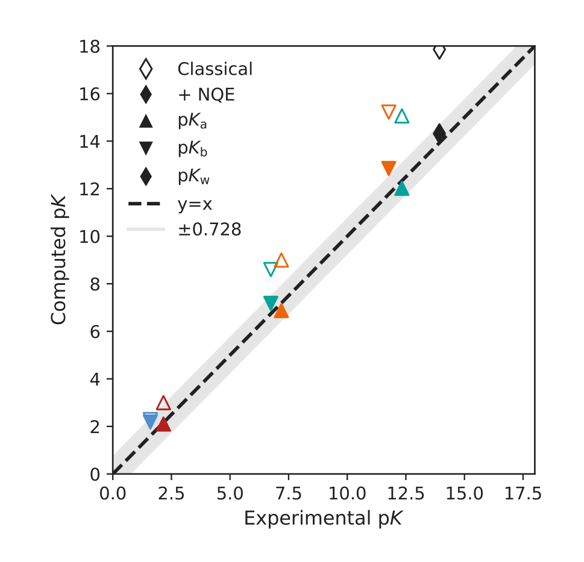

从质子跳跃算到解离常数：机器学习势支持的定量酸碱平衡
论文原文 ↗Quantitative modeling of acid-base equilibria
Qianjun Xu、Simin Liu、Cesare Malosso、Philip Loche、Michele Ceriotti｜arXiv:2610.13265，2026年10月9日｜官方页面｜
酸在水中释放质子，看起来只是一个O–H键断裂，但要从原子模拟算出准确的pKₐ，需要同时处理几件事：水的氢键网络持续重排，质子可以沿水分子接力迁移，解离是低概率事件，轻质子的量子行为也会改变自由能。即使已经得到一条解离自由能曲线，如何把它换成标准态平衡常数，仍会影响最终数值。
本文把这些环节组合成一套连续计算流程：**微调反应性机器学习势 → 用一个能跟踪质子缺陷的坐标描述解离 → 增强采样得到自由能 → 校准有限盒子中的离子相互作用 → 分别计算各反应的核量子修正。**作者先计算水的自电离，再沿磷酸的全部解离阶梯计算三组pKₐ和三组pKᵦ，展示同一流程在不同酸碱反应中的使用。
一、目标是什么：从溶液中的原子行为得到pK
酸解离可写为 AH＋H₂O ⇌ A⁻＋H₃O⁺。pKₐ是标准酸解离常数的负常用对数，数值每相差1，就对应平衡常数相差10倍。碱从水中接受质子时生成OH⁻，用pKᵦ描述；水自身生成H₃O⁺与OH⁻，则用pK𝑤描述。对于一对共轭酸碱，有 pKₐ＋pKᵦ＝pK𝑤。
作者从原子模拟求这些平衡常数，所需输入是反应体系的势能面、温度和压力。计算关注的是结合态和解离态在平衡中的统计权重，因此不仅要观察一次断键，还要充分采样两种状态及其溶剂环境。
二、方法怎样做：把反应势、质子坐标、采样与量子修正接起来
1．先把通用势微调到水和磷酸的反应环境
机器学习原子间势根据元素和原子坐标给出能量与力，用于推进分子动力学。作者以 PET-MAD-1.5 基础模型为起点，微调到 revPBE0-D3 电子结构参考水平。revPBE0是混合密度泛函，D3补充色散相互作用；采用同一参考水平，使不同溶液和反应状态的能量能够一致比较。
初始数据包含水和NaCl、NaOH、HCl水溶液的结构，随后加入磷酸及其钠盐溶液中增强采样得到的质子转移构型。作者还加入路径积分采样的结构，以覆盖质子量子离域产生的原子环境。训练与模拟反复进行，最终数据集包含 6,099个结构，模型测试能量和力的平均绝对误差分别为 1.07 meV/atom、19.2 meV/Å。
后续模拟以128个水分子为溶剂，加入H₃PO₄或相应磷酸根及Na⁺反离子，在 300 K、1 bar 下计算酸碱平衡。模型学习能量和力，解离常数由后面的统计力学计算得到。
2．用电荷缺陷的位置跟踪质子，而不是固定某一个氢原子
水中的多余质子可以从一个水分子转交给下一个水分子，这称为Grotthuss接力机制。OH⁻对应的缺质子状态也能沿氢键网络迁移。要描述解离距离，就需要持续识别“多出来或少掉的质子现在在哪里”。
作者根据氢与附近氧的距离，把每个氢平滑地分配给周围氧原子，再与该位点中性状态的氢数比较，定义位点的形式电荷。普通水氧接近0，H₃O⁺的氧接近＋1，OH⁻的氧接近−1。平滑分配让质子在两个氧之间转移时，坐标连续可导，能够用于施加采样偏置。
对于磷酸类溶质，取磷原子为参考点，用水中这些位点的电荷加权距离，构造一个带正负号的解离距离s。酸把质子交给水时产生H₃O⁺，进入s＞0一侧；溶质从水接受质子、留下OH⁻时，进入s＜0一侧；未解离的溶质在s≈0附近。这样，两性物种H₂PO₄⁻的酸、碱两条分支就能画在同一条一维坐标的两侧。
水自电离时，两端都是会迁移的电荷缺陷，作者改用类似偶极的电荷加权距离，并处理周期边界，使坐标能连续跟踪H₃O⁺与OH⁻之间的分离。

图1｜跟踪的是电荷缺陷的分离（原文 Figure 1）。红色和青色对应H₃O⁺、OH⁻相关位点，橙色是电荷参考中心。图中的实线与虚线展示采用周期性坐标处理后得到的不同距离；正确的连续距离用于推动和统计解离。
3．先建立偏置，再固定偏置充分采样
普通分子动力学很少访问高自由能的解离状态。作者先运行良温元动力学：沿s不断加入小的高斯偏置，逐步降低已访问区域相对于其他区域的优势，使体系能够在结合和解离之间往返。
出现往返后，把这份偏置冻结，再进行固定偏置的副本交换模拟。这里有8个温度副本，覆盖 300–400 K；副本之间交换温度，帮助跨过与水合壳层重排有关的障碍。每个物种运行10组不同初态的独立模拟，最后根据已知偏置重新加权，恢复目标温度下的无偏概率及自由能曲线。
这个分工很清楚：元动力学负责找到有用的偏置，固定偏置模拟负责稳定统计，副本交换帮助穿过单个解离距离不容易直接推动的溶剂重排过程。
4．自由能曲线怎样变成标准态解离常数
自由能曲线中的一个坐标值，汇集了许多原子构型。两个离子相距越远，可容纳相同距离的空间位置也越多。因此，沿距离的概率密度与单位体积的离子对分布，需要通过球壳体积因子联系起来。作者由此得到平均力势W(r)，表示把两个解离产物从远处带到距离r所需的可逆功。
按照可逆功定理，将结合区域中的玻尔兹曼权重积分，并加入标准浓度因子，就得到标准态解离常数。计算因此同时考虑结合态的自由能深度及其统计范围。
还需要确定曲线的能量零点。在有限周期盒中，分开的离子仍有库仑吸引，也会与周期镜像相互作用。作者计算同样盒子中点电荷的屏蔽库仑参考曲线，在足够分离的区间与模拟结果匹配，确定自由能偏移；同时处理盒子几何和周期静电带来的贡献。

图2｜从模拟曲线建立统一的解离参考（原文 Figure 2）。主图是水的经典解离自由能，细线为独立模拟，粗线为平均；插图放大解离区，比较无限体系与有限周期盒的库仑参考。与相同盒子的参考匹配后，曲线才能换成标准态平衡常数。
作者用同一条水解离曲线比较不同换算方法。可逆功方法得到经典 pK𝑤＝17.86±0.37；直接读取结合态与解离态两个最低点的自由能差，则比它高约 4.2个pK单位。这项比较说明，把曲线换成平衡常数本身就是定量方法的一部分。

图3｜平衡常数的定义怎样影响结果（原文 Figure 3）。实线、虚线和点划线分别对应可逆功积分、两区间积分和最低点自由能差。横轴改变结合/解离分界距离；可逆功结果在适当区间较稳定，三种方法仍相差多个pK单位。
5．核量子修正：在反应两端计算，而不用重做整条量子自由能曲线
质子质量很小，零点运动和空间离域会改变反应物与产物的相对稳定性。作者用**路径积分分子动力学（PIMD）**描述这种核量子效应：每个原子用相互连接的一组“珠子”表示其量子统计分布，本文使用32个珠子。
计算采用质量热力学积分。逐步把所有原子核的质量从真实值增大，体系会逐渐趋近经典极限。作者在结合态和解离态中，分别计算若干质量下的量子动能，将两种状态的动能差沿质量变化积分，得到量子行为对解离自由能的修正，再换成pK修正。
具体采用5个质量缩放点。因为目标是反应两端的自由能差，采样重点放在这两个状态的动能平均值，因而减少了重复计算整条量子解离曲线的成本。

图4｜量子修正从哪里来（原文 Figure 4）。横轴从经典极限走向真实核质量，纵轴是两种状态动能差对应的积分函数；曲线下的面积给出解离自由能的核量子修正。水的修正使pK𝑤降低约3.54。
三、主要结果：从水自电离到磷酸的全部酸碱阶梯
水：把经典值修正到接近实验
在300 K、1 bar下，经典模拟给出pK𝑤＝17.86±0.37。质量积分得到的核量子自由能修正约为 −20.36 kJ/mol，对应 −3.54个pK单位，最终得到 14.31±0.37，与同温度实验值13.93接近。
这将两类计算接起来：机器学习势和增强采样给出经典反应自由能，路径积分端态计算补入核量子效应。作者特别强调，每种反应的修正都由自身的势能面及两端质子环境决定，需要分别计算。
磷酸：一个带符号坐标覆盖三次酸解离和三次碱解离
H₃PO₄可以逐级失去三个质子；中间的H₂PO₄⁻和HPO₄²⁻也能接受质子。作者对H₃PO₄、NaH₂PO₄、Na₂HPO₄和Na₃PO₄水溶液使用同一流程，计算六个解离常数。

图5｜同一坐标连接酸与碱两种反应（原文 Figure 5）。右列是逐级酸解离，左列是相应共轭碱的碱解离。各曲线从接近零的未解离区域进入正或负分离区；曲线形状同时显示不同接触离子对和溶剂分离状态的相对稳定性。
主要数值如下。磷酸根的模型使用相应钠盐维持电中性，表中的实验值均对应300 K。
| 过程 | 经典结果 | 加核量子修正后 | 实验值 |
|---|---|---|---|
| 水自电离，pK𝑤 | 17.86 | 14.31 | 13.93 |
| H₃PO₄的pKₐ | 3.00 | 2.10 | 2.16 |
| H₂PO₄⁻的pKₐ | 9.00 | 6.87 | 7.19 |
| HPO₄²⁻的pKₐ | 15.06 | 12.02 | 12.33 |
| H₂PO₄⁻的pKᵦ | 15.22 | 12.85 | 11.77 |
| HPO₄²⁻的pKᵦ | 8.60 | 7.17 | 6.74 |
| PO₄³⁻的pKᵦ | 2.29 | 2.18 | 1.60 |
核量子修正的大小随反应显著变化：从PO₄³⁻碱解离的约−0.11，到水自电离的约−3.54个pK单位。七个结果相对实验的平均绝对误差，由 2.19降到0.45个pK单位。由此，同一套采样与分析流程能够覆盖跨度很大的酸碱平衡，而每一步反应的量子贡献仍得到单独处理。

图6｜整组解离常数的预测变化（原文 Figure 6）。横轴是实验pK，纵轴是计算pK；空心为经典结果，实心为加入量子修正后的结果。多数实心点明显靠近对角线，灰带对应约1 kcal/mol的自由能偏差。
作者还用共轭酸碱关系组织这些结果：分别将三对pKₐ和pKᵦ相加，与直接计算的pK𝑤比较。这让整条解离阶梯中的多个计算能够彼此联系；其中H₂PO₄⁻的碱解离也是与实验偏差较大的过程。
四、贡献：给出从原子模拟到绝对pK的完整计算路线
本文的方法价值，是把容易分散处理的几个环节统一起来：反应性势负责高效采样原子运动，带符号坐标跟踪水中的质子接力，固定偏置与副本交换提供统计权重，可逆功和周期库仑匹配定义标准态，质量积分补入核量子效应。各步骤的输出都进入下一步，最终产生可以与实验比较的绝对解离常数。
对水相反应、质子化状态及表面酸碱位点研究，这套流程提供了直接参考：如何描述会迁移的质子缺陷，如何从有限盒子的自由能得到宏观平衡，以及怎样用较集中的量子采样修正反应自由能。磷酸的六个解离过程展示了这种计算组织方式的可迁移性。
附：原始摘要完整中文翻译
从第一性原理模拟酸碱平衡是一项极具挑战性的任务，因为它需要描述复杂氢键环境中的断键事件。质子的量子力学行为往往十分重要，使模拟进一步复杂化。我们表明，通过结合先进的机器学习势、解离过程的加速采样，以及对核量子修正的高效估计，可以可靠地计算不同物种在水中的解离常数。
我们将这一工作流成功应用于水的自电离，以及磷酸在水中解离的整个阶梯，展示了其可迁移性。解离常数的定义、序参量的选择、采样伪影和有限尺寸效应，以及核量子效应，都会显著影响计算结果；因此，简化或省略这些环节很可能引入偏差，而这些偏差只有通过偶然的误差抵消才能被补偿。